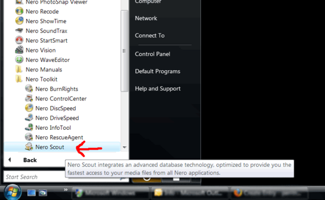
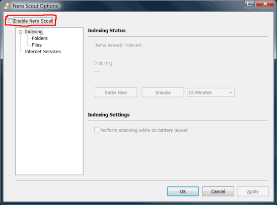

Howto remove/disable Nero Scout in Nero 8
In the time that I've used Nero 8 I've found it seems to run more smoothly than its predecessor. However, one leftover still remains that I think is completely unnecessary, Nero Scout. If you search the web you'll find many pages telling you how to remove Nero Scout from Nero 7. It's a major system hog that will suck away your resources.
Fortunately with Nero 8 they've made it easier to remove Nero 8. The down-side of this is that the instructions on Nero's support site are completely useless:
How can I disable Nero Scout, or how can Nero Scout be removed from the task bar? You can either disable Nero Scout completly or you can only remove the “search” option from the task bar.If you want to remove Nero Scout from the task bar, uncheck the box „Show NeroDesktop Search“.
- Open "My Computer", make a right click on "Nero Scout", select "options".
- Uncheck the box “enable Nero Scout” in order to disable Nero Scout.
Wrong.
Here's how it's done:
From your Start menu (in XP or Vista) click on All Programs, then Nero 8, and then the Nero Toolkit and click on Nero Scout.
This will bring up the Nero Scout Options dialog box:
Simply uncheck the box that says Enable Nero Scout. This will shutdown these services:
- NMBgMonitor.exe
- NMIndexStoreSvr.exe
After you reboot you should no longer see this service:
- NMIndexingService.exe
Posted by Bill at January 9, 2008 9:58 AM
 del.icio.us |
del.icio.us |  Digg this |
Digg this |  Furl |
Furl |  StumbleUpon |
StumbleUpon |  Yahoo MyWeb |
Yahoo MyWeb |  Google
Google
Comments
Doesn't work.
Posted by: Dave barker at February 19, 2009 1:37 AM
I've tried the procedure, doesn't work
Posted by: misterchip at March 30, 2009 3:23 PM
thanks, it's working in windows xp :)
Posted by: Alex at June 29, 2010 3:47 AM
Disable NVIndexing in 'Services' to completely disable.
Posted by: solution at July 16, 2010 4:05 AM
well i do not know what it is
Posted by: ebiarede peter at August 12, 2010 2:00 AM
Post a comment
Thanks for signing in, . Now you can comment. (sign out)
(If you haven't left a comment here before, you may need to be approved by the site owner before your comment will appear. Until then, it won't appear on the entry. Thanks for waiting.)


{kind=link}
{kind=link}